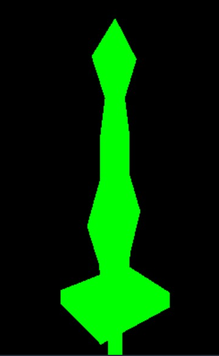

Shi Johnson-Bey
Graduate Student at Carnegie Mellon University
 I am a graduate student in the Department of Biomedical Engineering at Carnegie Mellon University working with
Dr.Pulkit Grover. I earned my Bachelor of
Science degree from the University of Delaware with a double major in Computer Science and Neuroscience. My
current research focus is on the use of electroencephalography (EEG) brain-computer interfaces (BCI) in conjuction
with virtual reality/mixed reality platforms. My personal interests include video games, AI, and machine learning.
Below you will find descriptions of current and past projects. Enjoy.
I am a graduate student in the Department of Biomedical Engineering at Carnegie Mellon University working with
Dr.Pulkit Grover. I earned my Bachelor of
Science degree from the University of Delaware with a double major in Computer Science and Neuroscience. My
current research focus is on the use of electroencephalography (EEG) brain-computer interfaces (BCI) in conjuction
with virtual reality/mixed reality platforms. My personal interests include video games, AI, and machine learning.
Below you will find descriptions of current and past projects. Enjoy.


Current Research
Auditory P300 Event-Related Potentials for Virtual Reality
 This is my masters research thesis project. The goal is to explore the use of an auditory P300
BCI paradigm for enabling users to select objects in virtual reality. Users select objects by
focusing on the sound direction associated with the specific object. We are able to take the
brain response generated by this task and use a machine learning classifier to make predictions
as to what object the user wants to select. Pictured are the virtual apartment environment and
three objects used during testing.
This is my masters research thesis project. The goal is to explore the use of an auditory P300
BCI paradigm for enabling users to select objects in virtual reality. Users select objects by
focusing on the sound direction associated with the specific object. We are able to take the
brain response generated by this task and use a machine learning classifier to make predictions
as to what object the user wants to select. Pictured are the virtual apartment environment and
three objects used during testing.
Github Link: Audio P300 ERP
Past Projects
An introduction to Machine Learning with Boxing Agents
 I threw this project together over the course of a week as an entry in Unity's first challenge
for their new 'Ml-Agents' machine learning workflow. I had tossed around the idea of
using machine learning to train AI agents in fighting games, but had never gotten around to it
until then. The agents learn via Reinforcement Learning and are given a simple policy that
positively rewards landed punches on the opponent, and negatively awards taking damage.
Other behaviors such as successful blocking, and advancing on the opponent are rewarded
as well.
I threw this project together over the course of a week as an entry in Unity's first challenge
for their new 'Ml-Agents' machine learning workflow. I had tossed around the idea of
using machine learning to train AI agents in fighting games, but had never gotten around to it
until then. The agents learn via Reinforcement Learning and are given a simple policy that
positively rewards landed punches on the opponent, and negatively awards taking damage.
Other behaviors such as successful blocking, and advancing on the opponent are rewarded
as well.
Challenge Link: Unity Machine Learning Agent Challenge 1
Github Link: Reinforcement Learning Boxing Bots
Infiniforge: My introduction to Computer Graphics And Procedural Generation
 Inspired by the then upcoming release of 'No Man's Sky' and my interest in blacksmithing, I tried my hand at developing a PCG system for swords. My goal was to finish the project and submit it to the Reddit PCG challenge linked below. This project served as an introduction to both PCG as well as computer graphics. The result is a NodeJs server that can export 3D meshes to Unity via a REST API. I am working on a HTML5 version that people can play on this site. The current version (see 'Infiniforge' tab above), is still much under construction.
GitHub Link: Procedurally generated swords project
Reddit Challenge: August 2016 Reddit PCG Challenge
Plants vs. Zombies Clone
 This is the first project from my Fall 2013 "CISC108: Intro to Computer Science I" course. This was also my first
group development project inwhich I worked with and another student. All groups were asked to produce
a clone of the popular 'Plants vs. Zombies' game. This project as both a lesson in game development as well as
a lesson in handling group dynamics. The game is written in Racket.
This is the first project from my Fall 2013 "CISC108: Intro to Computer Science I" course. This was also my first
group development project inwhich I worked with and another student. All groups were asked to produce
a clone of the popular 'Plants vs. Zombies' game. This project as both a lesson in game development as well as
a lesson in handling group dynamics. The game is written in Racket.
GitHub Link: Plants vs. Zombies clone
Battleship Clone
 This game clone was the final group project in my Fall 2013 "CISC108: Intro to Computer Science I" course.
Out of the cloning options, we chose to go with Battleship. The game is written using Racket and allows
one player to play against an AI. Core lessons learned during the course of this project included,
coordinating another student and programming GUIs in Racket.
This game clone was the final group project in my Fall 2013 "CISC108: Intro to Computer Science I" course.
Out of the cloning options, we chose to go with Battleship. The game is written using Racket and allows
one player to play against an AI. Core lessons learned during the course of this project included,
coordinating another student and programming GUIs in Racket.
GitHub Link: Battleship Clone